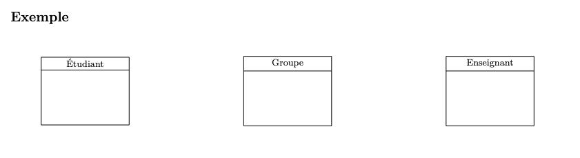
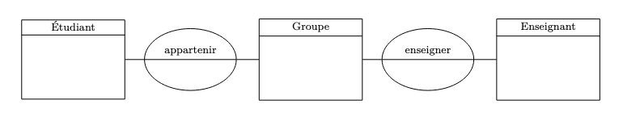

Une base de données efficace est une base de données bien conçue. Il est alors nécessaire
de précéder l’étape d’implémentation de la base de données par une étape de modélisation des
données.
L’étape de modélisation est ainsi l’une des étapes les plus importantes dans son cycle de
vie. C’est elle qui va définir de la structure de la BDD, et c’est sur elle que reposera l’efficacité
ou non de la BDD. Cette étape consiste à analyser les besoins des utilisateurs de la BDD et la
nature des données à manipuler ainsi que leurs relations.
Deux modèles peuvent être produits et seront présentés dans ce chapitre : le modèle conceptuel de données (MCD) et le modèle logique de données (MLD).
Une BDD bien conçue est une BDD basée sur un modèle conceptuel qui respectera un certain nombre de règles dîtes de "normalisation". Parmi les principes les plus importants, on retrouve
le principe de non-redondance et qui est le principe d’évitement de duplications (répétitions) inutiles des données dans la BDD. L’objectif principal étant d’éliminer les incohérences lors de
modifications de données, car en cas de redondance, la modification d’une donnée signifie que toutes ses copies devraient être mises à jour.
Le modèle conceptuel de données (MCD) est un modèle graphique qui a pour but de décrire les données qui seront utilisées dans la future BDD. Le MCD décrit la sémantique c’est-à-dire le sens attaché à ces données et à leurs rapports et non à l’utilisation qui peut en être faite. Cette section présente les différentes notions liées à un MCD.
Définition : Une entité est une classe d’objets homogènes ayant une existence propre par rapport au réel modélisé.
Exemple : Exemples d’entité manipulées par le réel de la scolarité de l’école : l’entité "Étudiant", l’entité "Groupe", l’entité "Enseignent", etc.
Représentation graphique : Dans un MCD, une entité est représentée par un rectangle ayant deux cases. La case supérieure contient le nom de l’entité.
Définition : Une association est une liaison qui va lier un certain nombre d’entités dans le réel modélisé.
Exemple : Dans le réel de la scolarité, il y a par exemple une association entre l’entité "Étudiant" et l’entité "Groupe", car il est important de savoir l’appartenance d’un étudiant à son groupe. Il pourrait y avoir une association entre l’entité "Étudiant" et l’entité "Enseignant", sauf qu’il serait plus intéressant qu’il y ait association entre l’entité "Groupe" et l’entité "En- seignant". La liaison entre un "Enseignant" et un "Étudiant" serait alors représentée mais de manière indirecte (Enseignant ↔ Groupe ↔ Étudiant).
Représentation graphique : Dans un MCD, une association est représentée par une forme ovale ayant deux cases (ou une seule, voir la section "Propriété"). La case supérieure contient le nom de l’association. Le nom de l’association est souvent un verbe ou bien la concaténation des noms des entités liées par l’association. Chaque lien qui relie une association à une entité est appelée branche.
